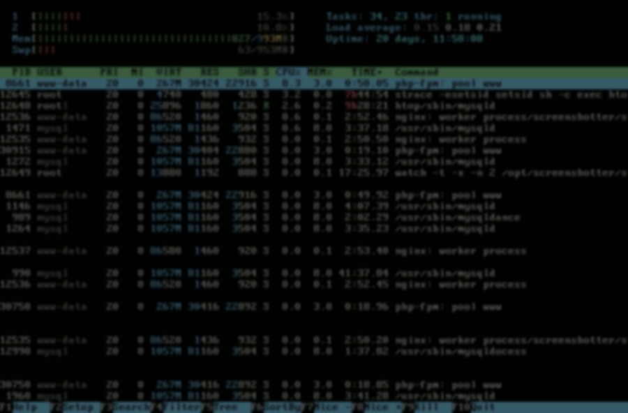
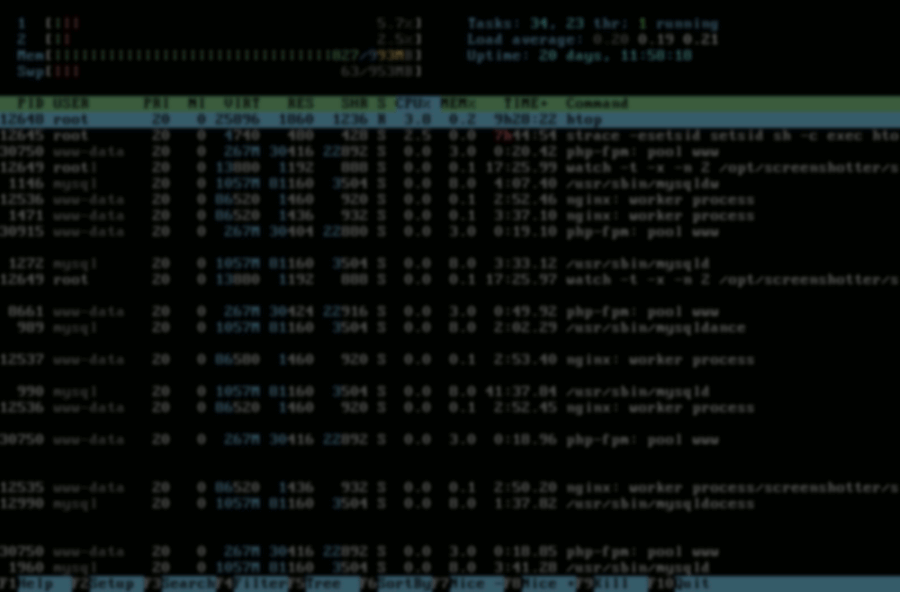
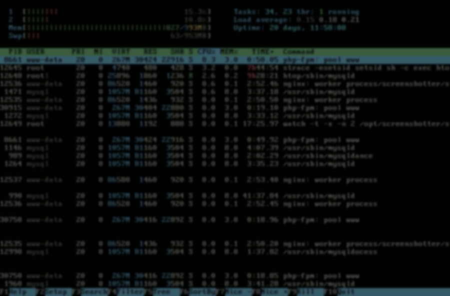
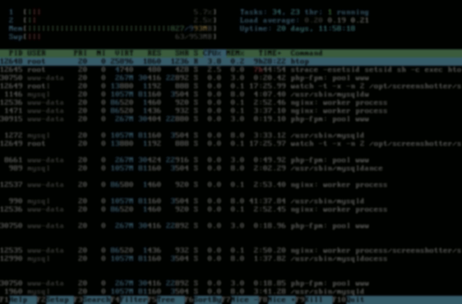

Downloads
You can obtain it freely in two forms:
- Sources - source code, provided on Github
- Binaries - pre-compiled binaries, provided by distributions
Sources
Building htop is straightforward, as it uses GNU Autotools: the typical ./configure; make; sudo make install should do the trick. However, you may prefer to use binaries packaged for your distribution, see below.
- Stable, tarball Github : Check out the Github releases (autotools required) for the latest version .
- Development, from the Git repository: You can fetch the work-in-progress sources for
the next release using
Git:
git clone https://github.com/htop-dev/htop
You can also browse the Git tree online.
Binaries
Packages for htop are available in most distros. Try the package manager from your system; chances are htop is available from there.
- GoboLinux: In GoboLinux you can fetch and compile htop by typing: Compile htop
- Debian:
In Debian you can fetch htop by typing:
apt install htop
You can also download the binary packages from the Debian webpage.
Thanks to Daniel Lange, Graham Inggs, Eugene Lyubimkin and Bartosz Fenski. - Fedora:
htop is included in the Fedora repositories; you can fetch it with:
dnf install htop
Thanks to Dawid Gajownik. - RedHat: You can find RPM packages at
EPEL
Thanks to Josh Stone for the tip. - Slackware: htop is part of Slackware. You can find it in the ap/ section.
Thanks to Patrick Volkerding for including it, and to Fred Broders for earlier packages. - Gentoo: In Gentoo Linux you can emerge the
sys-process/htop
package by typing:
emerge sys-process/htop
Thanks to Wolfram Schlich. - AltLinux: here are the
latest RPMs
for AltLinux.
Thanks to Ilya Evseev. - OpenSuSE: htop is included in the
OpenSuSE build service.
Thanks to Timo Hoenig. - Arch Linux: htop is included in Arch Linux official repositories, you can get it with:
pacman -S htop
Thanks to Christian Hesse.